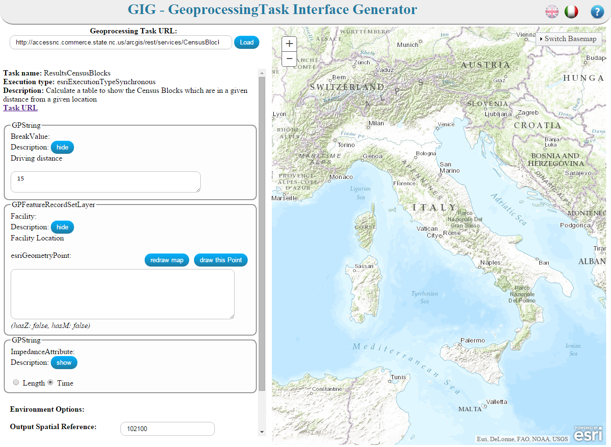

The web application has been realized for supporting the user which wants query a task of geoprocessing service.
After having indicated in the textbox the task's url, GIG automatically generates a graphic interface, that allows to send a request to the geoprocessing
task in a simple and intuitive manner.
